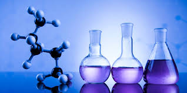

Introducción a la Química
La química es la ciencia que estudia la composición, estructura y propiedades de la materia, así como los cambios que experimenta durante las reacciones químicas y su relación con la energía.
Conceptos fundamentales
- Materia: Todo lo que tiene masa y ocupa espacio.
- Átomos: Las unidades básicas de la materia, formadas por protones, neutrones y electrones.
- Elementos: Tipos puros de átomos, organizados en la tabla periódica.
- Moléculas: Dos o más átomos unidos por enlaces químicos.
- Reacciones químicas: Procesos en los que unas sustancias se transforman en otras.
Ejemplos con imágenes
Más información, explicaciones detalladas y ejemplos prácticos que faciliten la comprensión del tema.